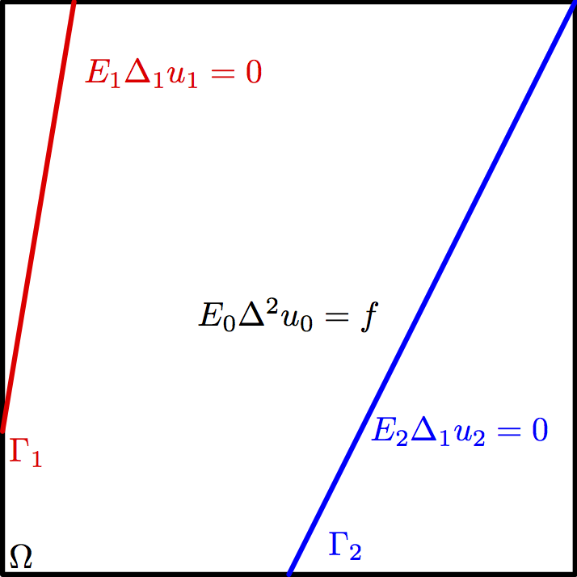
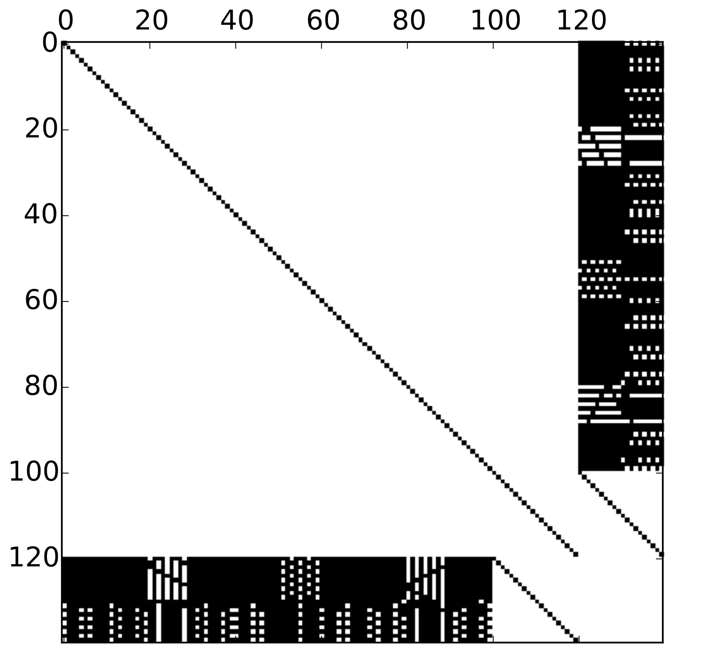
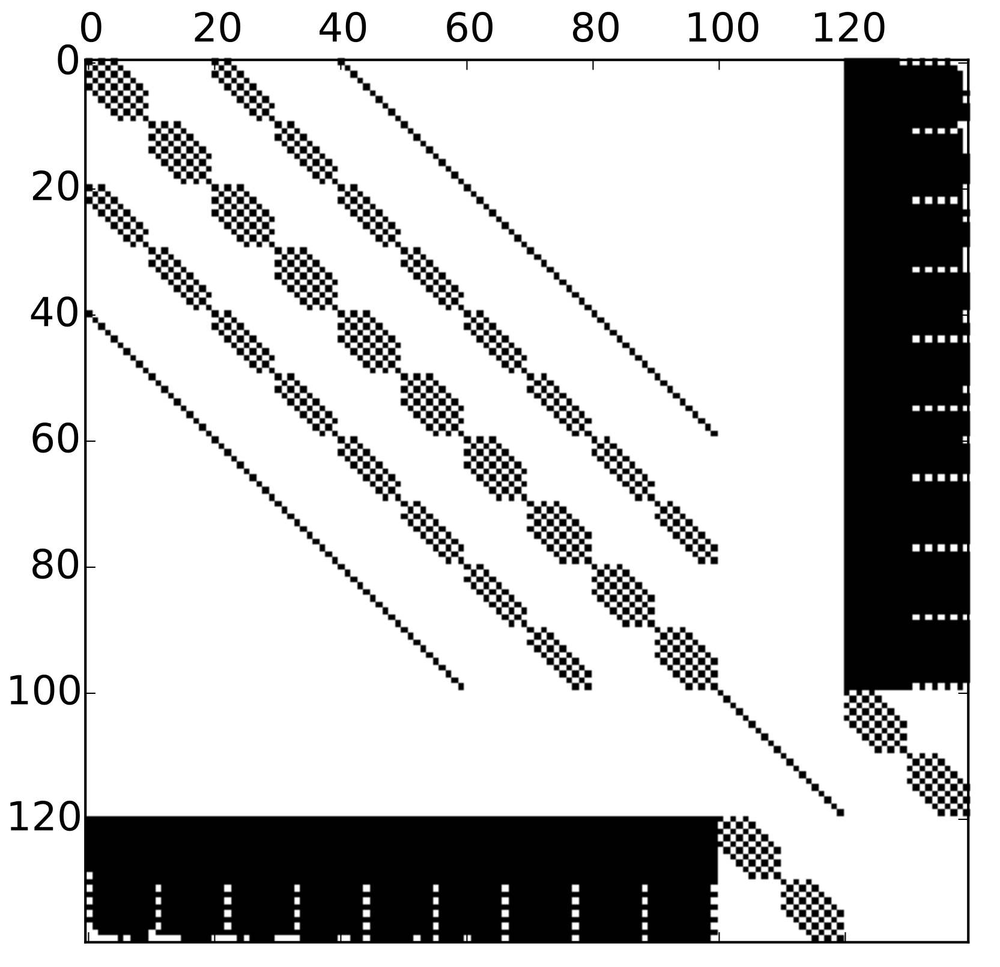
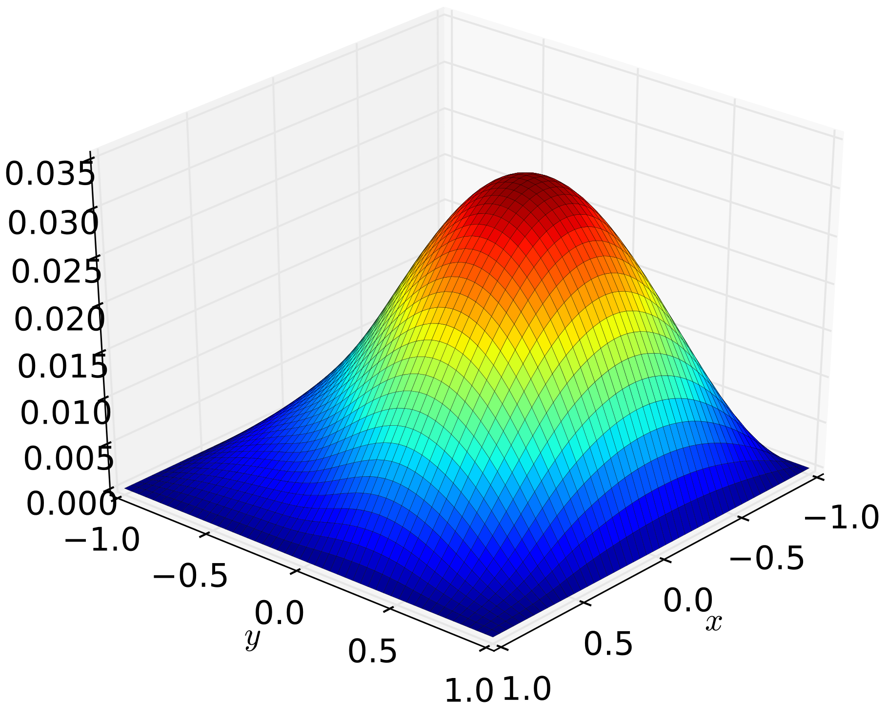
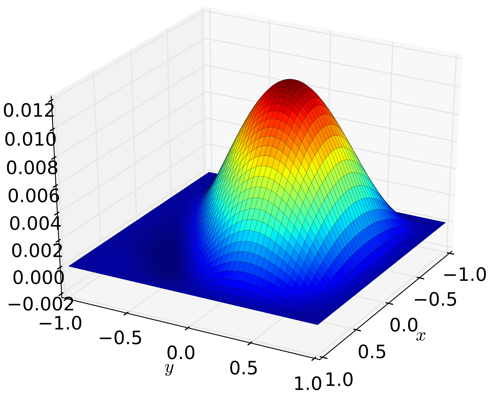
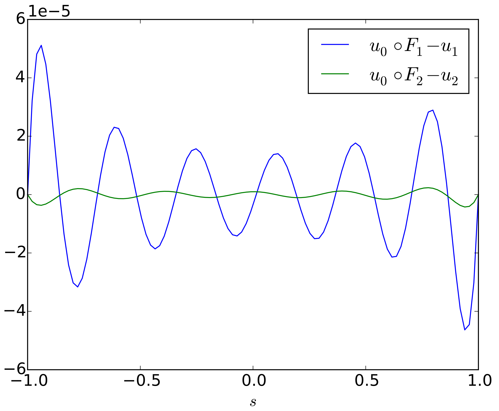
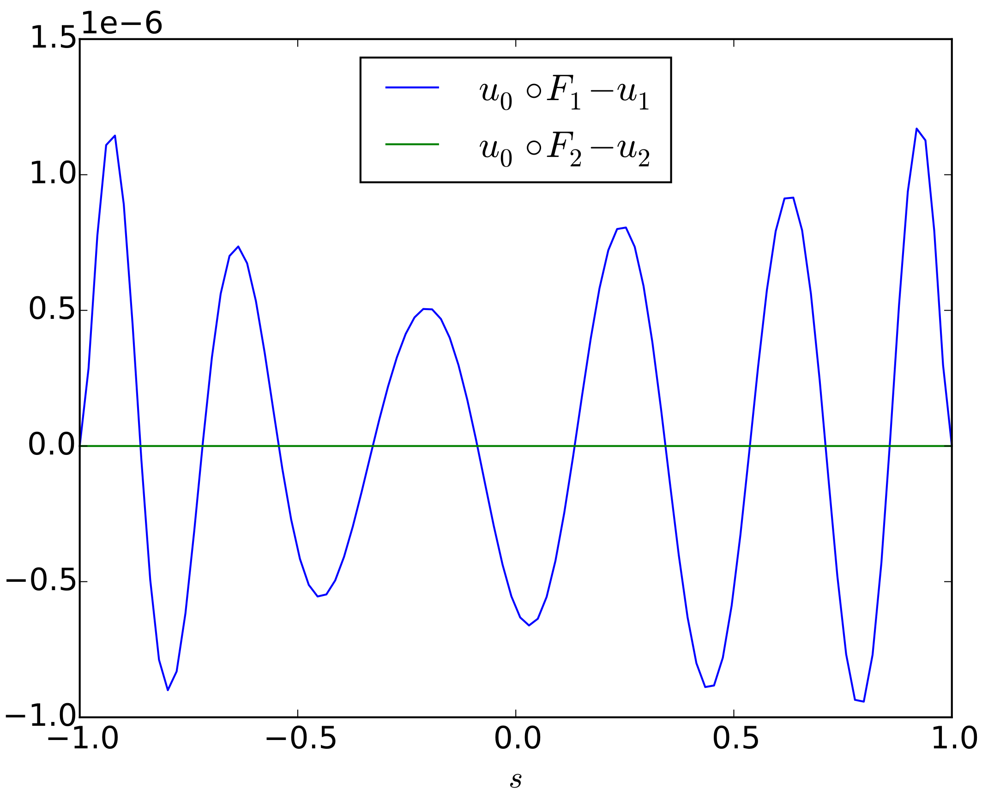

Mikael Mortensen, Miroslav Kuchta and Kent-Andre Mardal
MekIT 2015
University of Oslo
Simula Research Laboratory

def sine_basis(n, symbol='x'):
'''
Functions sin(k*x), k = 1, 2, ....n, normalized to have L^2 norm over [0, pi].
Note that (sin(k*x), k**2) are all the solutions of
-u`` = lambda u in (0, pi)
u(0) = u(pi) = 0
'''
x = Symbol(symbol)
return [sin(k*x)*sqrt(2/pi) for k in range(1, n+1)]
def mass_matrix(n):
'''inner(u, v) for u, v in sine_basis(n).'''
return eye(n)
def stiffness_matrix(n):
'''inner(u`, v`) for u, v in sine_basis(n).'''
return diags(np.arange(1, n+1)**2, 0, shape=(n, n))
def bending_matrix(n):
'''inner(u``, v``) for u, v in sine_basis(n).'''
return diags(np.arange(1, n+1)**4, 0, shape=(n, n))
def sine_function(F):
'''
Return a linear combination of len(F_vec) sine basis functions with
coefficients given by F_vec.
'''
if len(F.shape) == 1:
basis = sine_basis(F.shape[0], 'x')
return function(basis, F)
elif len(F.shape) == 2:
basis_x = sine_basis(F.shape[0], 'x')
basis_y = sine_basis(F.shape[1], 'y')
basis = tensor_product([basis_x, basis_y])
# Collapse to coefs by row
F = F.flatten()
return function(basis, F)
else:
raise NotImplementedError
def assemble_mat_blocks(self):
'''Assembled individual blocks of the system matrix.'''
# --A: 2d bending + 1d bendings with Jac, all scaled by matieral
self._Amat_blocks = []
# Biharmonic 2d
n = self.n_vector[0]
B = shen.bending_matrix(n)
A = shen.stiffness_matrix(n)
M = shen.mass_matrix(n)
mat0 = kron(B, M)
mat1 = 2*kron(A, A)
mat2 = kron(M, B)
mat = mat0 + mat1 + mat2
self._Amat_blocks.append(mat)
# Biharmonic 1d
for n in self.n_vector[1:]:
self._Amat_blocks.append(shen.bending_matrix(n))
# Now materials:
for i, coef in enumerate(self.materials):
self._Amat_blocks[i] *= coef
# Finally jacobians
for i, beam in enumerate(self.beams, 1):
# four derivs + 1*dx
self._Amat_blocks[i] *= float(beam.Jac**(-3))
# -- D: Just mass matrices scaled by Jacobian
self._Dmat_blocks = [shen.mass_matrix(n) for n in self.n_vector[1:]]
for i, beam in enumerate(self.beams):
self._Dmat_blocks[i] *= float(beam.Jac)
# -- C: plate restricted ...
n = self.n_vector[0]
basis_x = shen.shen_cb_basis(n, 'x')
basis_y = shen.shen_cb_basis(n, 'y')
plate_basis = tensor_product([basis_x, basis_y])
x, s = symbols('x, s')
n_rows = n**2
self._Cmat_blocks = []
for n_cols, beam in zip(self.m_vector, self.beams):
C = np.zeros((n_rows, n_cols))
# Setup basis for involved spaces
plate_basis_r = [beam.restrict(v) for v in plate_basis]
beam_basis = shen.shen_cb_basis(n, 's')
# Some heuristics for quadrature
n_quad = n**2 + n_cols + 3
Q1 = Quad1d(n_quad)
# Build the matrix
for row, u in enumerate(plate_basis_r):
for col, v in enumerate(beam_basis):
f = u*v*beam.Jac
f = f.subs(s, x)
C[row, col] = Q1(f, [-1, 1])
self._Cmat_blocks.append(csr_matrix(C))
class Quad1d(object):
'''One dimensional integration with GL quadrature.'''
def __init__(self, N):
'''Quadrature formulat using N points.'''
self.points, self.weights = leggauss(N)
def __call__(self, f, domain):
'''Integrate symbolic f over domain.'''
a, b = domain
assert a < b
# Map to reference [-1, 1].
x = Symbol('x')
pull_back = a*(1-x)/2 + b*(1+x)/2
Jacobian = (b-a)/2
f = f.subs(x, pull_back)*Jacobian
f = lambdify(x, f, 'numpy')
f_point_values = f(self.points)
return np.sum(f_point_values*self.weights)





